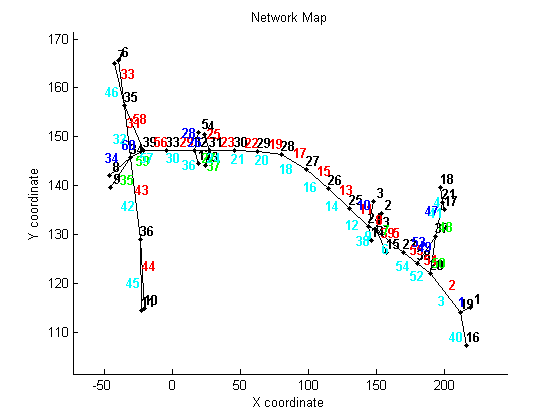
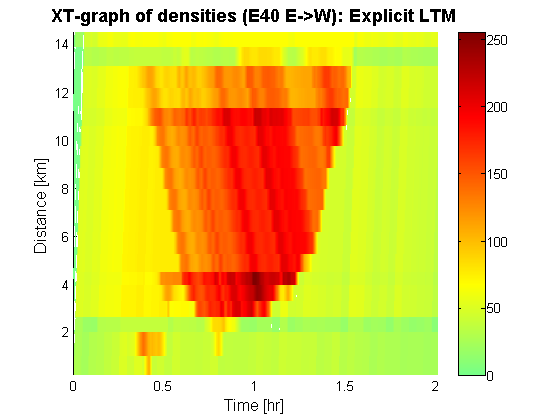
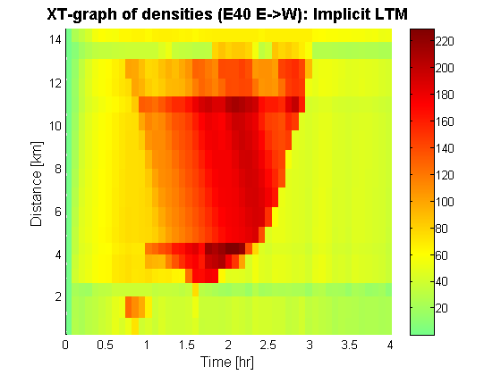
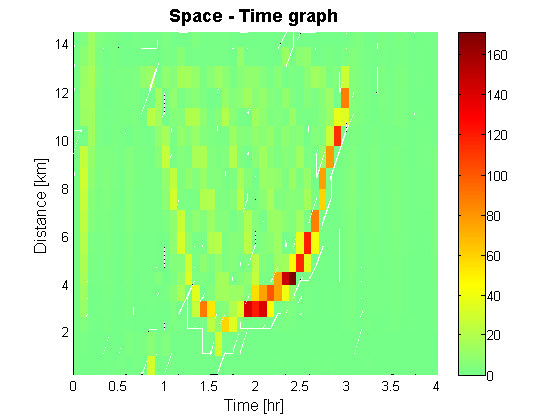
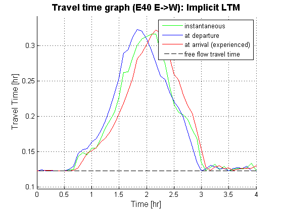
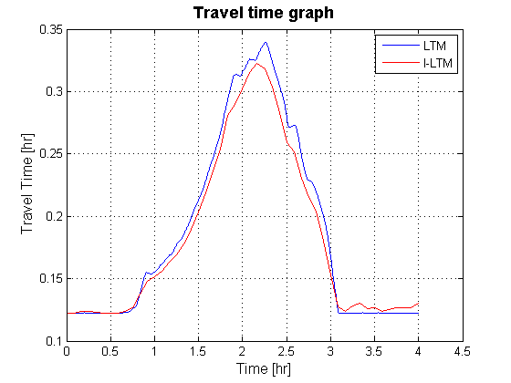
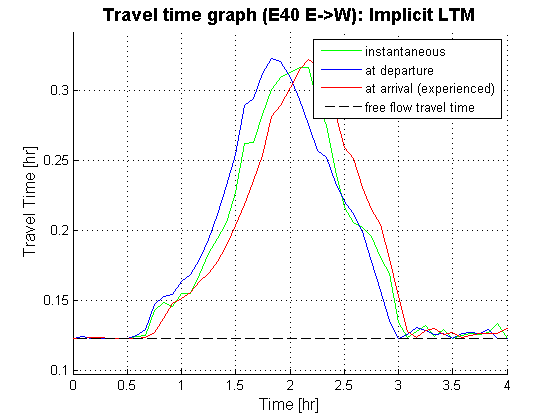
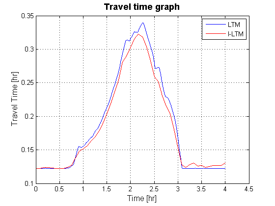

Tutorial 7: Comparing explicit and implicit scheme on a corridor
Contents
- Disclaimer
- Introduction
- Loading the data
- Setup the simulation (for small and large time intervals)
- initilize the Destination Based Split rates
- Compute a multi-commodity Dynamic Network Loading
- Compute a multi-commodity Dynamic Network Loading with large time intervals
- Visualize the resulting densities using XT diagrams
- Compute the maximum difference between both solutions
- Transform CVN values to travel times
- Closing notes
Disclaimer
This file is part of the matlab package for dynamic traffic assignments developed by the KULeuven.
Copyright (C) 2016 Himpe Willem, Leuven, Belgium
This program is free software: you can redistribute it and/or modify it under the terms of the GNU General Public License as published by the Free Software Foundation, either version 3 of the License, or any later version.
This program is distributed in the hope that it will be useful, but WITHOUT ANY WARRANTY; without even the implied warranty of MERCHANTABILITY or FITNESS FOR A PARTICULAR PURPOSE. See the GNU General Public License for more details.
You should have received a copy of the GNU General Public License along with this program. If not, see http://www.gnu.org/licenses/.
More information at: http://www.mech.kuleuven.be/en/cib/traffic/downloads or contact: willem.himpe {@} kuleuven.be
Introduction
This tutorial illustrates the difference between an explicit and implicit scheme for the link transmission model on a corridor.
%add these folders to the search path addpath('Dynamic Traffic Assignment','Visualization Tools','Network Data') javaclasspath('Dynamic Traffic Assignment'); %clear the work space clear %clear the command window clc %close all windows close all display('<<<Comparing explicit and implicit scheme on a corridor>>>')
<<<Comparing explicit and implicit scheme on a corridor>>>
Loading the data
The network represents a simple corridor of network that consists of the interaction of three highways (R0-E40-E314) in the area between Leuven and Brussels in Belgium.
% Network and demand data load net5.mat % Plot the network plotNetwork(nodes,links,true,[]);
Setup the simulation (for small and large time intervals)
Before the simulation can be run the time interval has to be set and the total number of time steps has to be defined. These are used to transform the different origin-destination (OD-) matrices into a 3D-matrix. The time interval is bound by CFL-conditions for the explicit scheme. It can not be larger then the minimal travel time of the fastest kinematic wave in the network. The time interval for the implicit scheme is set ten times larger than the CFL-conditions.
%setup the time interval and total number of time steps dt = min(links.length./links.freeSpeed); totT = round(4/dt)+1; dt_l = 5/60; totT_l = round(4/dt_l); %build the full ODmatrix [ODmatrix,origins,destinations] = buildODmatrix(ODmatrices,timeSeries,dt,totT); [ODmatrix_l,origins,destinations] = buildODmatrix(ODmatrices,timeSeries,dt_l,totT_l);
initilize the Destination Based Split rates
The destination based split rates are set such that only the shortest path in free flow conditions is used. In this network there is no route choice and it is not required to compute the users respons to delays.
%Compute free flow travel times on each link for every time interval. tt_free = repmat(links.length./links.freeSpeed,1,totT+1); %Compute destination based turning fractions TF = allOrNothingTF(nodes,links,destinations,tt_free,[],dt,totT,10*dt,'last');
Compute a multi-commodity Dynamic Network Loading
First the explicit multi-commodity link transmission model is used to propagate the traffic over the network. This model requires detailed time discretization to provide a result.
display('Running LTM multi-commodity with an explicit scheme') display(['total number of node updates: ',num2str(totT*length(nodes.id))]); %run LTM tic [cvn_up_d,cvn_down_d] = LTM_MC(nodes,links,origins,destinations,ODmatrix,dt,totT,TF); toc
Running LTM multi-commodity with an explicit scheme total number of node updates: 53508 Elapsed time is 93.877184 seconds.
Compute a multi-commodity Dynamic Network Loading with large time intervals
Now the implicit multi-commodity link transmission model is used to propagate the traffic over the network. This model is able to compute a result for much larger time intervals. This isn't only beneficial for memory usage as less data has to be stored. It is also important for computation time as now less node updates have to be computed. This effect is however reduced by required iterations of each time slice.
display('Running I-LTM multi-commodity with large time intervals and an implicit scheme') %run ILTM tic [cvn_up_dl,cvn_down_dl] = ILTM_BASE(nodes,links,origins,destinations,ODmatrix_l,dt_l,totT_l,TF); toc
Running I-LTM multi-commodity with large time intervals and an implicit scheme average number of iterations: 24.3333 maximum number of iterations: 49 total number of node updates: 25392 Elapsed time is 38.443713 seconds.
Visualize the resulting densities using XT diagrams
Resulting densities and flows are depicted for both approaches in space-time (or XT) diagrams of the E40 highway from east to west.
%compute the simulated densities & flows [simDensity_d] = cvn2dens(sum(cvn_up_d,3),sum(cvn_down_d,3),totT,links); [simFlows_down_d] = cvn2flows(sum(cvn_down_d,3),dt); [simDensity_dl] = cvn2dens(sum(cvn_up_dl,3),sum(cvn_down_dl,3),totT_l,links); [simFlows_down_dl] = cvn2flows(sum(cvn_down_dl,3),dt_l); %Main road route = [1,2,51,55,5,8,11,13,15,17,19,22,23,26,29,56,58,33]; plotXT(links,route,simDensity_d,dt,totT); title('XT-graph of densities (E40 E->W): Explicit LTM','FontSize',14,'fontweight','b') plotXT(links,route,simDensity_dl,dt_l,totT_l); title('XT-graph of densities (E40 E->W): Implicit LTM','FontSize',14,'fontweight','b') 
Compute the maximum difference between both solutions
The following lines of code compare the output of both models in terms of difference in density and total travel time spend. The absolute difference in density of both solutions is also depicted in a space-time graph of the E40 highway from east to west.
maxDiff = 0; for d=1:length(destinations) for l=1:length(links.id) maxDiff = maxDiff + sum(abs(interp1(dt*[0:totT],cvn_up_d(l,:,d),dt_l*[0:totT_l])-cvn_up_dl(l,:,d))); maxDiff = maxDiff + sum(abs(interp1(dt*[0:totT],cvn_down_d(l,:,d),dt_l*[0:totT_l])-cvn_down_dl(l,:,d))); end end simDensity_d2 = zeros(size(simDensity_dl)); for l=1:length(links.id) simDensity_d2(l,:) = interp1(dt*[0:totT],simDensity_d(l,:),dt_l*[0:totT_l]); end fprintf(1,'\n'); display('Comparing LTM & ILTM') display(['- maximum difference in density: ',num2str(max(max(abs(simDensity_d2-simDensity_dl)))),' veh/km']); display(['- average difference in density: ',num2str(sum(sum(abs(simDensity_dl-simDensity_d2)))/sum(sum(simDensity_d2))),' veh/km']); display(['- absolute difference in total travel time spend: ',num2str(abs(sum(sum(dt_l/2*(simDensity_d2(:,1:end-1)+simDensity_d2(:,2:end)).*repmat(links.length,1,totT_l)))-sum(sum(dt_l/2*(simDensity_dl(:,1:end-1)+simDensity_dl(:,2:end).*repmat(links.length,1,totT_l)))))),' veh*h']); plotXT(links,route,abs(simDensity_d2-simDensity_dl),dt_l,totT_l);
Comparing LTM & ILTM - maximum difference in density: 170.7855 veh/km - average difference in density: 0.060471 veh/km - absolute difference in total travel time spend: 802.3586 veh*h
Transform CVN values to travel times
The upstream and dowsntream CVN functions of the link transmission model are transformed into travel times for every link in the network.
%calculate the simulated travel times [simTT] = cvn2tt(sum(cvn_up_d,3),sum(cvn_down_d,3),dt,totT,links); [simTT_l] = cvn2tt(sum(cvn_up_dl,3),sum(cvn_down_dl,3),dt_l,totT_l,links); %visualize the travel time along the main route (from split to merge) [~,~,~,tt]=plotTT(links,route,simTT,dt,totT); title('Travel time graph (E40 E->W): Explicit LTM','FontSize',14,'fontweight','b'); [~,~,~,tt_l]=plotTT(links,route,simTT_l,dt_l,totT_l); title('Travel time graph (E40 E->W): Implicit LTM','FontSize',14,'fontweight','b'); %compare both travel times figure; plot(dt*[0:totT],tt,'b',dt_l*[0:totT_l],tt_l,'r'); grid on legend('LTM','I-LTM') xlabel('Time [hr]','FontSize',12); ylabel('Travel Time [hr]','FontSize',12); title('Travel time graph','FontSize',14,'fontweight','b');
  
  Closing notes
- The implicit model can be run with increasing time intervals to inspect the aggregation errors. It can be seen that travel times are biased towards lower values. This is expected as the active period of the bottleneck shortens with larger time intervals. computations